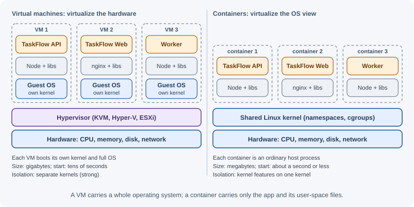
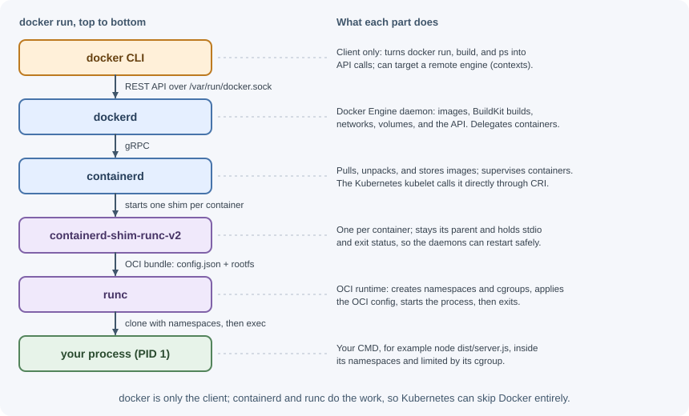

Container Fundamentals¶
A container is an ordinary Linux process that the kernel has been told to
isolate: it gets its own view of the process list, network, filesystem,
and hostname, and it is limited in how much CPU and memory it may use.
Nothing about it is virtual hardware. This lesson explains the kernel
features that make containers possible (namespaces and cgroups), how
images are built from stacked read-only layers, the standards that let
any runtime run any image, the chain of programs between docker run and
your process, and the states a container moves through.
Understanding the mechanism pays off quickly: it explains why a container starts in a second, why data written inside it disappears, why it can be killed with exit code 137, why an image built on an Apple-silicon laptop can fail on a server, and why Kubernetes can run Docker images without Docker.
Why it matters¶
Before containers, a deployment meant installing the right runtime, system libraries, and dependency versions on every server and hoping they matched the developer's machine. Virtual machines solved the mismatch by shipping a whole operating system, at the cost of gigabytes per copy and slow boots. Containers ship only the application and its user-space files, share the host kernel, and start almost as fast as a normal process, so a single server can run dozens of isolated services and the same artifact can move unchanged from a laptop to production.
The same design creates the problems you will debug in production: containers share one kernel (weaker isolation than VMs), their writable layer is temporary, their limits are enforced by the kernel without warning, and the image still depends on the CPU architecture it was built for.
Real-world usage¶
- Google (Borg). The ACM Queue article Borg, Omega, and Kubernetes (2016) describes more than a decade of running workloads in containers at Google, explains why the container became the unit of deployment there, and shows how those lessons shaped Kubernetes.
- The Linux kernel. The namespaces(7) and cgroups(7) manual pages document the two kernel features every container runtime is built on. Docker, Podman, containerd, and CRI-O all call the same system calls.
- Open Container Initiative. The
OCI was formed in 2015 by
Docker and other industry members to standardize the image format and
runtime. Docker contributed
runc, which is still the reference runtime most engines use. - Kubernetes without Docker. The Kubernetes blog post Don't Panic: Kubernetes and Docker explains that images built with Docker keep working on clusters that use containerd or CRI-O directly, because they are standard OCI images.
Popular tools and providers: Docker Engine and Docker Desktop,
Podman, containerd with nerdctl, CRI-O, runc and crun, gVisor and
Kata Containers for stronger isolation, Rancher Desktop, and Colima.
How it works¶
Containers compared with virtual machines¶
A virtual machine emulates hardware. A hypervisor gives each VM virtual CPUs, memory, and disks, and each VM boots its own kernel and full operating system. A container emulates nothing: it is a process on the host kernel, started with restricted views (namespaces) and resource limits (cgroups).

| Virtual machine | Container | |
|---|---|---|
| What is isolated | Whole machine, including the kernel | A process tree, using kernel features |
| Kernel | One per VM | Shared with the host |
| Typical size | Gigabytes (full OS) | Megabytes to a few hundred MB |
| Start time | Tens of seconds (OS boot) | Usually under a second plus app startup |
| Density | Tens of VMs per host | Hundreds of containers per host |
| Isolation strength | Strong: a kernel bug in one VM rarely affects others | Weaker: a kernel exploit can escape to the host |
| Can run a different OS | Yes (Windows on Linux, any kernel) | No: Linux containers need a Linux kernel |
The two are often combined. Cloud servers are VMs, and containers run inside them. Projects such as Kata Containers and Firecracker-based services wrap each container in a tiny VM when tenants do not trust each other.
Namespaces: what a container can see¶
A namespace wraps a global system resource so that processes inside it see their own isolated instance. When a runtime starts a container, it creates a new namespace of each type and places the process in it.
| Namespace | Isolates | Effect inside the container |
|---|---|---|
| PID | Process IDs | The app sees itself as PID 1 and cannot see host processes |
Network (net) |
Interfaces, IP addresses, routes, ports, firewall rules | Own eth0 and localhost; port 3000 does not clash with the host's |
Mount (mnt) |
Mount points | Own root filesystem, assembled from the image |
| UTS | Hostname and domain name | Own hostname (the short container ID by default) |
| IPC | System V IPC and POSIX message queues | Cannot attach to other processes' shared memory |
| User | User and group IDs | Root inside can map to an unprivileged UID outside |
| Cgroup | View of the cgroup tree | Sees its own cgroup as the root |
| Time | Some clock offsets | Rarely used by container engines |
Two details matter in practice. First, Docker does not enable user
namespaces by default: root inside a default container is UID 0 on the
host, limited only by dropped capabilities, seccomp, and AppArmor or
SELinux. Rootless Docker, Podman's rootless mode, and Docker's
userns-remap setting change that (see
container security). Second, namespaces can be
shared on purpose: docker run --network host skips the network
namespace, and --pid container:<name> joins another container's process
namespace, which is how debugging sidecars see the app's processes.
cgroups: what a container can use¶
Control groups (cgroups) account for and limit the resources a group of
processes uses. Modern distributions use cgroup v2, a single unified
hierarchy under /sys/fs/cgroup. Docker creates one cgroup per container
and writes the limits you pass:
| Docker flag | cgroup v2 file | What happens at the limit |
|---|---|---|
--memory 512m |
memory.max = 536870912 |
The kernel reclaims memory, then the OOM killer kills a process (exit code 137) |
--cpus 1.5 |
cpu.max = 150000 100000 |
The group may use 150 ms of CPU time per 100 ms period, then is throttled until the next period |
--pids-limit 200 |
pids.max = 200 |
fork() fails, so a fork bomb cannot exhaust the host |
--cpu-shares 512 |
cpu.weight (converted) |
Only a relative weight when CPUs are contended |
Memory and CPU behave differently at the limit, and this difference is
the root of many production incidents: CPU is compressible (a
container over its CPU quota just runs slower), while memory is not
(a container over its memory limit is killed). The limits apply to the
whole container, but tools inside it often do not know about them. For
example, Node's os.cpus() still reports every host CPU, so size worker
pools from configuration rather than from the CPU count.
Images: stacked read-only layers¶
An image is an ordered list of filesystem layers plus a JSON
configuration (environment variables, working directory, user, entry
point, command, exposed ports). Each Dockerfile instruction that changes
files (RUN, COPY, ADD) produces a layer containing only the files
it added, changed, or deleted. Layers are tar archives identified by the
SHA-256 digest of their content, so identical layers are stored once and
shared between every image and container that uses them.
When a container starts, the runtime stacks the image layers read-only
and adds one thin writable layer on top. On Linux this is done with
overlayfs: the image layers are the lowerdir, the writable layer is
the upperdir, and the container sees the merged view as its root
filesystem. Docker's classic storage driver for this is overlay2; newer
installations increasingly use the containerd image store, whose
overlayfs snapshotter achieves the same result.
![Diagram: on the left, the TaskFlow API image is a stack of read-only layers (FROM node:24-slim about 200 MB, COPY package files under 1 MB, RUN npm ci about 40 MB, COPY src about 1 MB) shared by container A and container B, each of which has its own dashed writable layer on top; on the right, overlayfs merges the upperdir (writable layer) over the lowerdir (image layers), and four rules apply: reads come from the highest layer that has the file, writing an image file copies it up first, deleting leaves a whiteout, and docker rm discards only the writable layer.](../image-layers-writable.svg)
This design has consequences you can predict:
- Copy-on-write is per file. Changing one byte of a 500 MB file that came from the image first copies the whole file into the writable layer. Databases and other write-heavy workloads must use volumes.
- Deleting in a later layer does not shrink the image. If one
RUNdownloads a 300 MB archive and the nextRUNdeletes it, the first layer still contains it. Download, use, and delete in the sameRUN, or use a multi-stage build. - The writable layer dies with the container.
docker rmdeletes it. Anything worth keeping belongs in a volume, a database, or object storage. - Shared layers save disk and pull time. Ten services built on the
same
node:24-slimbase store that base once, and a server that already has it pulls only the small application layers.
The OCI specifications¶
The Open Container Initiative maintains three specifications that make images and runtimes interchangeable:
| Specification | Defines | Why it matters |
|---|---|---|
| Image spec | The manifest, the image configuration, the layer format, and the image index for multiple platforms | An image built by Docker, Buildah, or Kaniko runs anywhere |
| Runtime spec | A "bundle" (config.json plus a root filesystem) and the operations create, start, kill, and delete |
Engines can swap runc for crun, gVisor's runsc, or Kata |
| Distribution spec | The HTTP API registries expose under /v2/ for pushing and pulling |
Any client can push to and pull from any compliant registry |
"Docker image" and "OCI image" are, for practical purposes, the same thing today. Docker's own manifest format predates OCI and both are accepted everywhere.
From docker run to a process¶
docker is only a command-line client. Every command becomes a call to
the Docker Engine API, and the actual work is split across several
programs.

- docker CLI parses
docker runand calls the API, by default over the Unix socket/var/run/docker.sock. With contexts orDOCKER_HOSTit can drive a remote engine. - dockerd (the Docker Engine) resolves the image, creates networks and volumes, and asks containerd to create the container.
- containerd stores images and snapshots and supervises container lifecycles. Kubernetes nodes run containerd (or CRI-O) without dockerd; the kubelet talks to it through the Container Runtime Interface (CRI).
- containerd-shim-runc-v2 is started once per container. It stays as the container's parent, holds its standard streams and exit status, and lets containerd and dockerd restart without killing containers.
- runc reads the OCI bundle, creates the namespaces and cgroup, sets up the root filesystem and security settings, starts the container's process, and exits.
Because every step speaks a standard (Engine API, CRI, OCI), the pieces
are replaceable. Podman, for example, has no daemon at all: the podman
command starts conmon and an OCI runtime directly.
The container lifecycle¶
![Diagram: docker create puts a container in the created state with no process; docker start moves it to running; docker pause and unpause move it between running and paused using the cgroup freezer; exiting, docker stop, or docker kill moves it to exited, which keeps the exit code; docker start or a restart policy (through the restarting state with backoff) brings it back to running; docker rm moves an exited container to removed, deleting its writable layer; removing and dead are rare transitional states.](../container-lifecycle-states.svg)
| State | Meaning | Reached by |
|---|---|---|
created |
Filesystem and configuration prepared; no process yet | docker create |
running |
The main process is alive | docker start, docker run (create + start) |
paused |
All processes frozen by the cgroup freezer | docker pause |
restarting |
The daemon is restarting it under its restart policy | A restart policy after an exit |
exited |
The main process ended; exit code and writable layer kept | Process exit, docker stop, docker kill |
removing |
Removal in progress | docker rm |
dead |
Removal partly failed (for example a busy mount) | Rare error cases |
docker stop sends the image's stop signal (SIGTERM unless STOPSIGNAL
says otherwise), waits up to 10 seconds by default (--timeout changes
it), then sends SIGKILL. docker kill sends SIGKILL immediately
unless you pass --signal. A container lives exactly as long as its
main process (PID 1): when that process exits, the container exits, even
if other processes were still running inside it.
Why containers fix "works on my machine"¶
An image freezes everything above the kernel: the OS packages, the runtime version, every dependency at its locked version, the file layout, the user, and the start command. The same digest therefore behaves the same on a laptop, a CI runner, and a server.
Some differences remain, and they explain most "but it works in Docker on my laptop" bugs:
- CPU architecture. Images contain compiled binaries. An
arm64image built on an Apple-silicon Mac does not run on anamd64server without emulation. Build multi-platform images (see images, registries, and tagging). - Kernel. The host kernel's version, enabled features, and cgroup version come from the server, not the image.
- Runtime inputs. Environment variables, mounted files, secrets, networks, and resource limits are supplied when the container starts.
- External services. The database, queues, and third-party APIs are not inside the image.
Docker Desktop on Windows and macOS¶
Linux containers need a Linux kernel, so Docker Desktop on Windows and
macOS runs a small Linux virtual machine and runs dockerd inside it. On
Windows the recommended backend is WSL 2; on macOS it uses Apple's
virtualization framework. The docker CLI on your desktop talks to the
engine inside that VM. This explains several behaviours:
- Bind-mounted project folders cross the VM boundary, so file access is
slower than on native Linux. On Windows, keep projects inside the WSL 2
filesystem rather than under
C:\. - Published ports are forwarded from the VM to your desktop, and the
special name
host.docker.internalreaches services on your host. - CPU and memory for all containers come from the VM's allocation, set in Docker Desktop's settings.
- Windows containers (Windows Server images) are a separate mode that needs a Windows kernel; they are unrelated to the Linux containers this section uses.
When to use and when not to use¶
Use containers when:
- You deploy services that must behave identically across developer machines, CI, and production.
- You want to run several services with conflicting dependencies on the same machines.
- You deploy to Kubernetes, a cloud container service (Cloud Run, ECS, Azure Container Apps), or any platform that accepts OCI images.
- You need fast, disposable environments for tests and local development.
Think twice when:
- Tenants do not trust each other and need kernel-level isolation: use VMs, or sandboxed runtimes such as gVisor or Kata Containers.
- The workload needs a different OS or kernel (Windows services, custom kernel modules).
- The application is a single static site or a serverless function where the platform already handles packaging.
- The team cannot yet patch base images and scan them; an unmaintained image is an unpatched server.
| Need | Better fit |
|---|---|
| Package a Node.js API with exact dependencies | Container |
| Run untrusted customer code | MicroVM (Firecracker, Kata) or gVisor |
| Run a Windows-only application | Windows VM or Windows containers |
| Isolate several services on one Linux host | Containers with resource limits |
| A database that needs tuned disks and backups | Managed database service, or a VM |
Practical examples¶
See the namespaces from inside and outside¶
# Inside: the container's process list starts at PID 1
docker run --rm alpine:3.22 ps
# PID USER TIME COMMAND
# 1 root 0:00 ps
# Inside: own hostname and network interfaces
docker run --rm alpine:3.22 sh -c 'hostname; ip addr show eth0'
# Outside: the same container is a normal host process
docker run -d --name demo nginx:1.30-alpine
pid=$(docker inspect --format '{{.State.Pid}}' demo)
ps -o pid,user,cmd -p "$pid" # nginx master, visible on the host
sudo ls -l /proc/"$pid"/ns # its namespace handles
sudo lsns -p "$pid" # which namespaces it is in
docker rm -f demo
The host sees nginx with a normal host PID; inside the container the
same process is PID 1. On Docker Desktop the host-side commands must run
inside the Linux VM, so try them on a Linux machine.
Build a "container" by hand with unshare¶
# On a Linux host: new PID, mount, UTS, and network namespaces
sudo unshare --pid --fork --mount-proc --uts --net bash
# Now inside the new namespaces:
hostname sandbox && hostname # does not change the host's hostname
ps aux # bash is PID 1; host processes are invisible
ip link # only a loopback interface, and it is down
exit
This is the core of what a runtime does. runc adds a separate root
filesystem, a cgroup with limits, dropped capabilities, and a seccomp
filter on top.
Read the cgroup limits a container got¶
docker run --rm --memory 512m --cpus 1.5 --pids-limit 200 alpine:3.22 \
sh -c 'cat /sys/fs/cgroup/memory.max /sys/fs/cgroup/cpu.max /sys/fs/cgroup/pids.max'
# 536870912
# 150000 100000
# 200
The memory limit is 512 × 1024 × 1024 bytes. The CPU quota of 150,000 microseconds per 100,000-microsecond period equals 1.5 CPUs.
Inspect an image's layers¶
docker pull node:24-slim
docker history node:24-slim # one row per instruction
docker image inspect node:24-slim \
--format '{{json .RootFS.Layers}}' # layer digests
docker image inspect node:24-slim \
--format '{{.Os}}/{{.Architecture}}' # e.g. linux/amd64
docker history shows the instruction that created each layer and its
size. Rows with 0B come from instructions that only change metadata
(ENV, CMD, EXPOSE).
Watch copy-on-write with docker diff¶
docker run -d --name cow nginx:1.30-alpine
docker exec cow sh -c 'echo hello > /usr/share/nginx/html/hello.html'
docker exec cow rm /usr/share/nginx/html/50x.html
docker diff cow
# C /usr/share/nginx/html
# A /usr/share/nginx/html/hello.html
# D /usr/share/nginx/html/50x.html
# (other entries, such as nginx's runtime files, omitted)
docker rm -f cow # the writable layer, and these changes, are gone
A means added, C changed, and D deleted. The deleted file still
exists in the image; the writable layer only records a whiteout.
Walk through the lifecycle¶
docker create --name life nginx:1.30-alpine
docker ps -a --filter name=life --format '{{.Names}}: {{.Status}}' # Created
docker start life # Up ...
docker pause life # Up ... (Paused)
docker unpause life
docker stop life # Exited (0) ...
docker inspect --format '{{.State.Status}} {{.State.ExitCode}}' life # exited 0
docker rm life
Best practices¶
- Treat containers as disposable: anything that must survive goes into a volume, a database, or object storage, never the writable layer.
- Run one main process per container and let it be PID 1 (or use a tiny
init such as
tini), so signals and exit codes behave predictably. - Set memory limits on every production container, and size the application (for example Node's heap) below them.
- Keep images small and few: share a common base image across services so layers are reused.
- Build images for the architecture of the servers that run them, or publish multi-platform images.
- Remember that containers share the kernel: keep hosts patched, drop privileges, and use VMs or sandboxed runtimes for untrusted code.
- Learn the engine-independent tools (
ctr,crictl,nerdctl) if you operate Kubernetes nodes, where dockerd is usually absent.
In production¶
- The container exits immediately with
exec format error. Detect:docker logsshowsexec /usr/local/bin/docker-entrypoint.sh: exec format error, and the container restarts in a loop. Cause: the image was built for another CPU architecture, typicallyarm64on an Apple-silicon laptop deployed to anamd64server. Fix: checkdocker image inspect --format '{{.Architecture}}', build in CI for the target platform, or publish a multi-platform image withdocker buildx. - A container is killed under load with exit code 137.
Detect:
docker inspect --format '{{.State.OOMKilled}}'returnstrue, and the host kernel log shows a memory cgroup out-of-memory kill. Cause: the process exceeded the container's memory limit; memory cannot be throttled, so the kernel killed it. Fix: raise the limit, cap the Node heap with--max-old-space-sizeat roughly 75% of the limit, and look for leaks. - Uploaded files vanish after a redeploy.
Detect: files saved before the deploy return 404 afterwards, and
docker diffon the old container showed them as added files. Cause: the application wrote to the container's writable layer, which was deleted when the container was recreated. Fix: mount a named volume, or store uploads in object storage. - The host's disk fills up.
Detect:
df -h /var/lib/dockeris near 100% anddocker system dfreports gigabytes of images, stopped containers, and build cache. Cause: old images and containers are never removed, logs are not rotated, or an application writes heavily to its writable layer. Fix: prune regularly, configure log rotation, and move write-heavy paths to volumes (see debugging and operating containers). - Upgrading Docker restarts every service on the host.
Detect: all containers stop when
dockerdrestarts during a package upgrade. Cause: by default, containers do not survive a daemon restart. Fix: set"live-restore": truein/etc/docker/daemon.jsonso running containers keep running while the daemon is down (not available in Swarm mode), or drain the host first. - A service with
--cpus 2starts 64 worker threads and is slow. Detect: CPU throttling counters (nr_throttledincpu.stat) climb while latency rises. Cause: the application sized its thread or worker pool from the host's CPU count, which a CPU quota does not change. Fix: set worker counts explicitly from configuration to match the quota.
Important terminology¶
- Container: An isolated, resource-limited process (or process tree) started from an image.
- Image: An immutable, layered filesystem plus configuration from which containers are created.
- Namespace: A kernel feature that gives a process its own isolated view of a global resource such as PIDs or the network.
- cgroup (control group): A kernel feature that limits and accounts for the CPU, memory, I/O, and process count of a group of processes.
- Layer: One read-only filesystem diff in an image, identified by its SHA-256 digest.
- Writable layer: The per-container layer that receives every change the container makes; deleted with the container.
- Copy-on-write: Copying a file from a lower layer into the writable layer only when it is first modified.
- overlayfs: The Linux union filesystem that merges image layers and the writable layer into one view.
- OCI: The Open Container Initiative and its image, runtime, and distribution specifications.
- Container runtime: Low level (
runc,crun) creates the isolated process; high level (containerd, CRI-O) manages images and lifecycles. - CRI: The Container Runtime Interface Kubernetes uses to talk to a high-level runtime.
Common mistakes and misconceptions¶
- Calling a container a lightweight VM. It has no kernel of its own and no virtual hardware.
- Assuming root in a container is harmless. Without user namespaces it is host root with some capabilities removed.
- Writing data to the container filesystem and expecting it to survive a redeploy.
- Deleting files in a later
RUNto shrink the image; the earlier layer still contains them. - Assuming the image pins the kernel. Kernel version and features come from the host.
- Forgetting CPU architecture when building on one machine and running on another.
- Believing Kubernetes "dropped Docker support" means Docker images stop working. Only the Docker Engine integration was removed; OCI images run as before.
Revision questions¶
- Which kernel features provide a container's isolation and its resource limits, and what does each control?
- Why can a container start in well under a second when a VM takes tens of seconds?
- A host runs 20 containers from the same 250 MB image, and each writes 30 MB to its writable layer. How much disk do the image and writable layers use, and why is it not 20 × 280 MB?
- A container runs with
--cpus 0.5. What value appears incpu.max, and what happens when the process tries to use more CPU? - Why does deleting a file in a later Dockerfile instruction not make the image smaller?
- Trace
docker runfrom the CLI to the running process. Which component would a Kubernetes node use instead of dockerd? - Name three differences between environments that a container image does not remove.
- What happens to a container's other processes when its PID 1 exits?